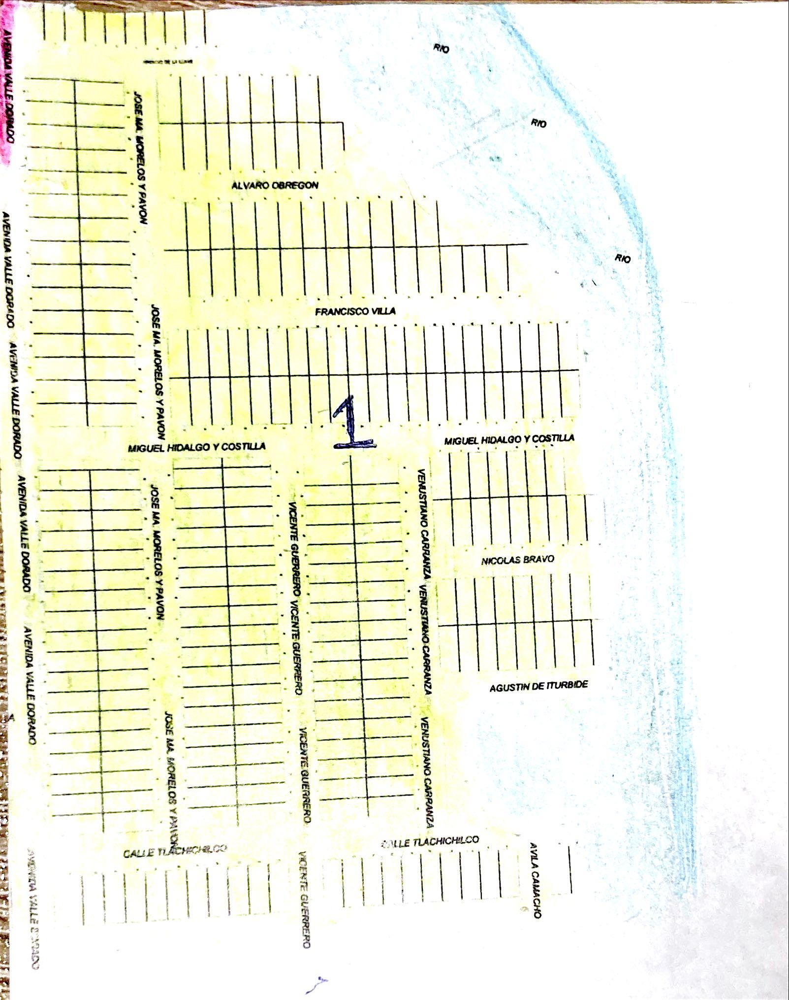
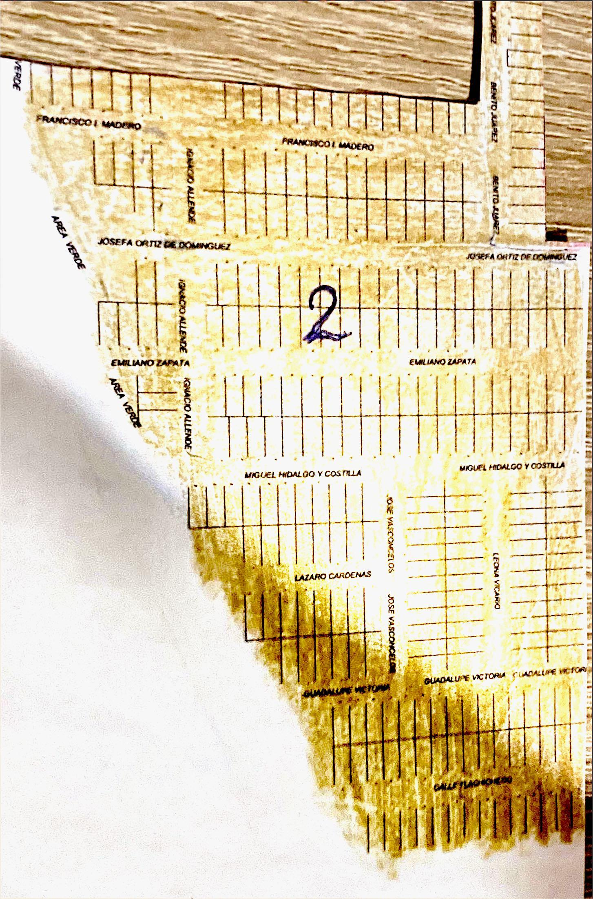
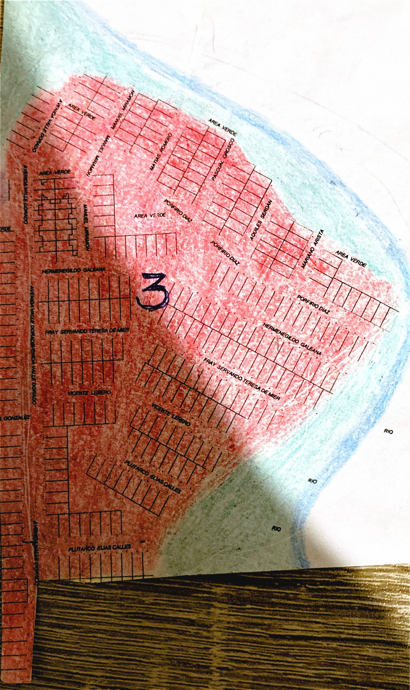
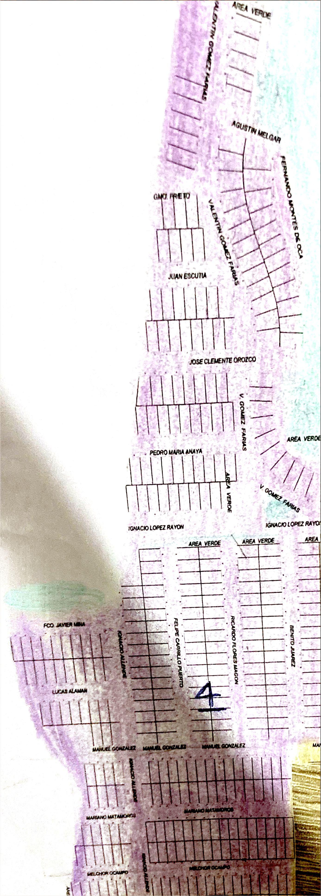
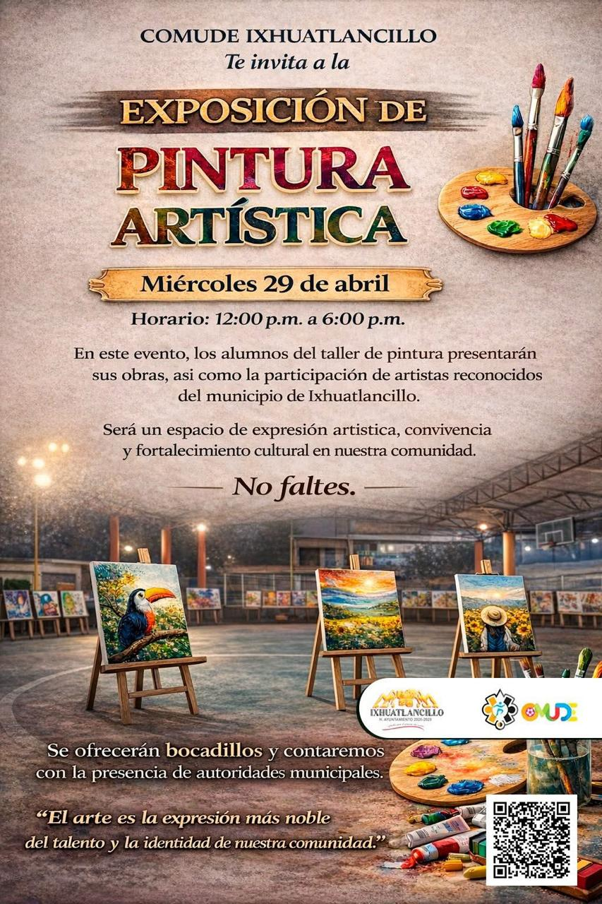
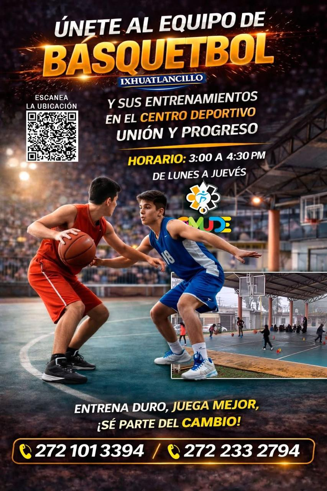
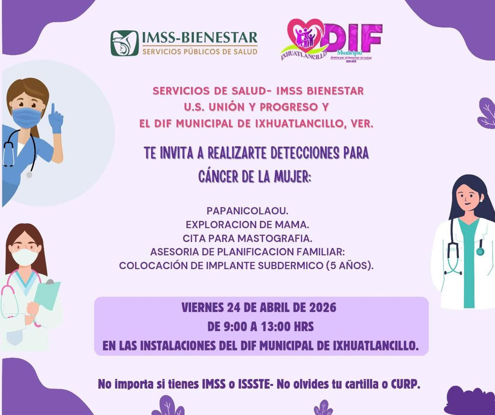
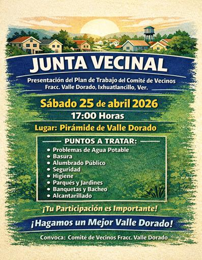

Administración 2026–2029
Municipio de Ixhuatlancillo, Veracruz
Bienvenidos a la página oficial del Comité del Fraccionamiento Valle Dorado.
Ir a FacebookDa clic en cada sección para ver el mapa en tamaño completo y poder identificar calles y ubicación.

📍 Sección 1

📍 Sección 2

📍 Sección 3

📍 Sección 4
Atención ciudadana:
📧 atencion.v.dorado@infinitummail.com





En esta sección se publican avisos importantes del Comité del Fraccionamiento Valle Dorado.
Por el momento no hay avisos o comunicados oficiales publicados.
Cuando haya transmisión activa desde el comité, se mostrará aquí.